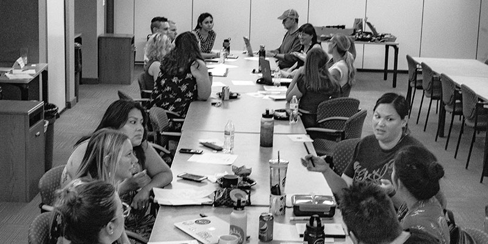

A kind campaign
For youth advocates in Tulsa, promoting health is more than preventing pregnancy

Scenes from the Teen Pregnancy Coalition meeting at Youth Services of Tulsa on August 7.
Joseph Rushmore
The first time it happened, I thought I’d been possessed by some sinister force. Cramps overtook me at school one day, wringing out the middle of my 90-pound body. “It’s like a dinosaur is laying on me,” I remember telling a friend who saw my face turn white from the pain on the floor of the bathroom at my private Christian high school. I was unable to get up.
This continued to happen at the onset of my wildly irregular teenage periods whenever they decided to arrive. The dark power of these episodes astounded me—how fast they would come, how long they would last. Once the attack started at the CD store where I worked. Once it hit while driving home from school. I pulled over and lay down in the backseat, yelling to engage muscles that might push out the hurt.
When it got worse, my mom took me to see the son of the OB-GYN who delivered me. He said I should get on birth control pills. They would regulate my periods, and very likely, I would suffer less or not at all if I took them. My mom was visibly offended by this suggestion. Birth control would encourage me to have sex, she worried. (A stranger to my sexuality, I was terrified of actual intercourse and relieved, back then, to follow the rules. I would not lose my virginity until I turned 21, four months before I got pregnant with my son—a surprise.)
Are there other options? my mom asked the OB-GYN. We eventually left the doctor’s office with a prescription for hydrocodone. The notion of birth control as shameful, even dangerous, settled in me, dissolved into my blood with the pain pills for years: out of my body, out of my mind.
* * *
“Tulsa Campaign To Prevent Teen Pregnancy” barely fits on one line in the Main Square Towers directory list. Whoever smushed together the capital letters on the board to spell “Pregnancy” felt the pressure to make it fit. Staffers pause to catch their breath after reciting the full name of the organization at meetings. Forget about spelling it out in tiny forms on paperwork. The Campaign’s logo deals with the heft by stacking the words like pancakes inside a red shape of Oklahoma.
In October, much to the staff’s excitement, the Tulsa Campaign to Prevent Teen Pregnancy will announce a new name as part of a re-brand. The current one evokes a Christopher Guest movie full of sanctimonious adults wedging prosthetic bellies between teenagers at school dances.
At worst, the focus on a scourge of “teen pregnancy” rather than birth control shames young people, mostly young women, for whom birth control almost worked, was out of reach, demonized as enabling sin or altogether unknown—irrelevant, maybe, in a world where mothers have children young and families greet the babies with love and lifetime care.
Young people in Oklahoma who have conceived share at least one formative experience with those who have not. They live in a state where the law does not require public schools to educate them about sex at all, except sex as a vehicle for HIV/AIDS. If a school board does decide to offer sex ed, they are required by the state to stress abstinence as the only completely effective method of birth control.
The call to arms for Oklahoma to embrace baseline sexual health education—the primary task of the Campaign in Tulsa—is undeniably serious, and very much not new. In 2017, Oklahoma had the third-highest birth rate for ages 15–19 in the nation. The number of births for youth in that age range has gone down by half in the past decade, according to the state’s health department. This improvement has been encouraging for advocates who hope to meet schools where they are, so some useful education—any useful education—can reach students.
Tulsa County ranks second in the state for teen birth rates as of last year. Individual schools within Tulsa’s public system can opt to teach sex education, but that’s the decision of each administration. A recent poll of 500 Tulsans by the Campaign showed 9 in 10 adults do believe sex education should be taught in schools. Less than 15 percent of parents, though, said they felt comfortable talking about the subject of sexual health with their kids.
Of course parents are daunted by the idea of having these conversations, says Amber McConnell, the executive director charged with re-energizing the Campaign. But many times these parents aren’t sure if what they believe about sex and birth control is accurate. Maybe no one ever taught them.
“All across the board, adults are afraid to say the wrong thing,” McConnell says.
Full of contextual insight into the myriad challenges faced by teenagers, McConnell speaks about each barrier as an opportunity for new connection. Parents often take their children to pediatricians until they turn 18, she tells me in a bright conference room at the organization’s offices during a staff brainstorming session. A pediatrician is not prepared to address questions about reproductive health as a general practitioner would, but the Campaign is working on that, too.
And though religious beliefs have played a part in keeping some teens from information, the Campaign has seen leaders in the faith-based community come to the coalition work meetings they oversee. “That’s always impressive to me,” McConnell says.
Broadly empathetic and cheerfully on-message, McConnell came to helm the Campaign at the end of December. She worked before on helping students with disabilities transition to life after high school. Her fellow staffers all formally joined the organization in 2019—a fresh team. This incarnation of the Campaign is focused on promoting health in a holistic way that would benefit the larger community. This will in turn require the community’s participation, a culture shift in traditionally hesitant, conservative public school administrations and a commitment to open dialogue. The work ahead is real and vast.
* * *
Encouragement toward nurturing and safe relationships, LGBTQ+ rights and overall awareness of reproductive health issues are now inextricable from the mission to bring down those teen birth rates in Tulsa. The Campaign trains sex educators and counsels schools whose administrations will hopefully adopt their recommended curriculum on healthy relationships and individual health before approaching the topic of intercourse and safe sex.
The staff also facilitates events meant to inspire the community toward attitudes of openness and concrete solutions. The most recent meeting of the Tulsa Teen Pregnancy Coalition in August at Youth Services of Tulsa was ripe with breakthroughs.
Campaign public relations director Preston Shatwell took notes from area pediatricians like Dr. Charity Pollak, who kept her laptop open as they discussed how the Campaign’s new website might best help doctors find information about the law in Oklahoma.
For example, it’s true that a minor in Oklahoma can only get a prescription for birth control without a parent’s permission if they are married, pregnant or have ever been pregnant. But Title X clinics offer confidential prescriptions, HIV testing and pregnancy screening for minors as young as 12. Many doctors aren’t sure whether they can refer their patients under 18 to these clinics without mentioning that to a parent. It’s dicey. Pediatricians are especially used to moms or dads accompanying their teenagers to exam rooms by default. A central resource for how to navigate all these issues would be helpful, the doctors said.
Reps from the Take Control Initiative, with the plain tagline “Take control of your future,” joined workers with Strong Tomorrows who support expectant and parenting high school students in Tulsa. The harmony is felt. Without conflating the experiences of their clients, advocates are pooling resources and intel for results.
I asked Dr. Pollak if she worried her involvement in these initiatives would cost her patients.
“We believe that women should be able to choose when they have children, no matter what age they are,” she said.
With common knowledge comes a consensus. In the absence of common knowledge about our bodies and what we might choose what to do with them, what is our consensus?
* * *
Years before I ever had sex, I had a baby of my own. I don’t think I asked for it. Santa surprised me and many other eight-year-olds with a Baby Alive doll in 1993. Made and sold by Kenner for the first time three decades before I ever held one at my grandmother’s kitchen table in Tyler, Texas, Baby Alive was a plastic infant of ambiguous age who could, in different configurations over the years, eat, speak, blow out a birthday candle, soil a diaper, drink from a bottle, use a small toilet, burp, and cry.
My baby was one of the simpler models. She had packets of powder for food—just add water. It smelled to me like something an astronaut would eat on the moon. The bond I had with my baby, for the day I was interested, was crystallized in a private thought, the first conviction I can remember keeping to myself. It was my duty to feed her before I ate my lunch on Christmas Day.
A gratifying rush of purpose replaced the need to announce this to my mom and grandmother. I imagined they would notice what a good mother I was without having to point it out. I wasn’t a natural, per se—this I understood immediately—but I was a good reader, had devoted myself to the instructions on the box and, carefully studying the ingredients, mixed the baby’s food before making my plate. No one at the table remarked on my sacrifice. This mattered little as I felt God watching, smiling. My perpetual need for praise and food fell away. In its place was my baby who needed me, so mysteriously warm, my serious assignment.
* * *
Re-wiring all this high-stakes human behavior can seem incredibly complicated. In preparing to write this piece, I became fixated on why the social workers and advocates employed or mobilized by the Campaign were drawn to the challenge, brave enough to attempt it in a climate where sex can still be so taboo a topic. No one I spoke with told me they’d had an unplanned pregnancy, or seen a friend through such an experience in high school.
Millie Hobgood is the outgoing program manager credited with jump-starting some of the Campaign’s new initiatives. A Tulsa native, her background is in sexual health education. Like everyone in the staff conference room, Hobgood never had a sex ed class in high school. She remembered a rogue biology teacher, though, who finished one unit with an aside. “If you have any questions that weren’t in the book, you can ask me,” she said.
Hobgood saw how many classmates spoke up, thankful an adult opened the floor to speak freely.
“It just became a passion of mine to connect people to information,” she tells me.
It’s clear the people who need information in this scenario are not just teenagers. We all have a lot to learn about our own power to help ourselves, to undo generations of confusion. And a lot to teach others about their power to do the same.
.jpg)
.jpg)